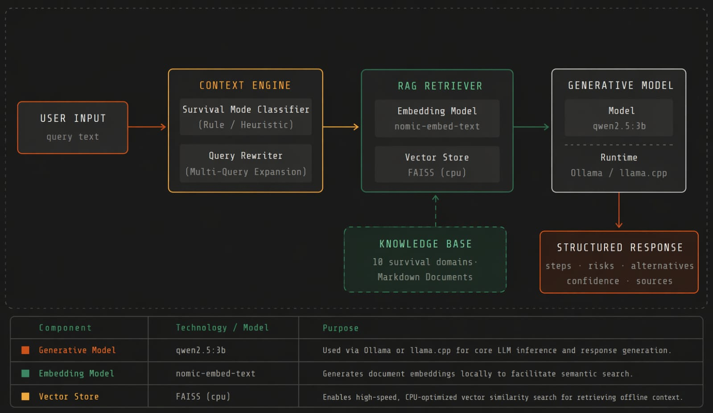
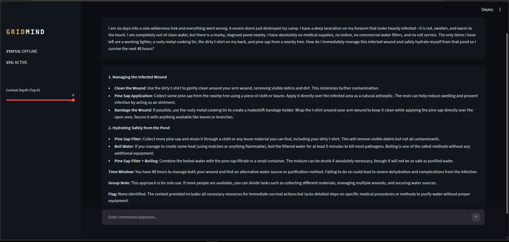
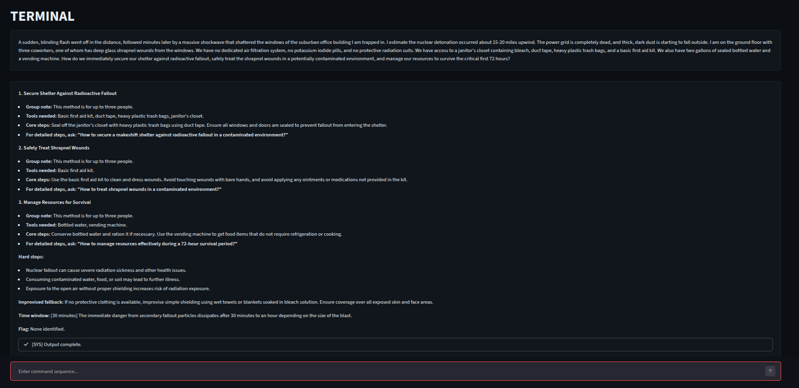
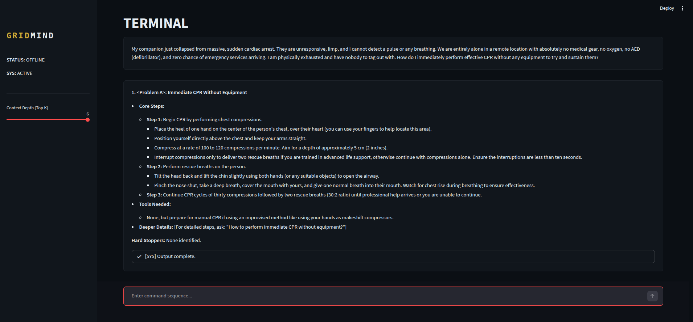

High-Precision Survival Intelligence for the Off-Grid World.
Uses Retrieval-Augmented Generation to anchor AI responses in verified local survival manuals, eliminating hallucinations when lives are on the line.
Designed to run on commodity hardware (laptops, Pi-based systems) using quantized GGUF models, ensuring availability without massive GPUs.
Instant knowledge base expansion via SHA-256 fingerprinting. Add new manuals and sync in seconds without full re-indexing.
In a world increasingly dependent on centralized cloud AI, GridMind solves the "Reliability Gap." It provides sovereign intelligence that works when the power is out, the internet is dead, and help is not coming. It turns static PDF libraries into a dynamic, situated reasoning engine.
Query: "Can I eat bread that expired 3 days ago?"
No. Bread past its recommended date may be unsafe to consume. It is best to discard expired food products and obtain a fresh source of food.
Result: Low Practical Value. Gives generic safety advice without considering scarcity or context.
Field Assessment:
1. Inspect: Check for green, black, or fuzzy mold spots.
2. Smell: If sour, fermented, or unusual odor is present, discard.
3. Texture: If dry or stale only, it is generally usable.
4. Use Fast: Consume soon after inspection or toast before use.
Judgment: Same facts, survival-calibrated decision making.
Result: Actionable Intelligence. Applies context-aware reasoning when alternatives are limited.

Scatter-gather retrieval pipeline across fragmented offline knowledge bases.
Terminal-style dashboard for fast offline use.


